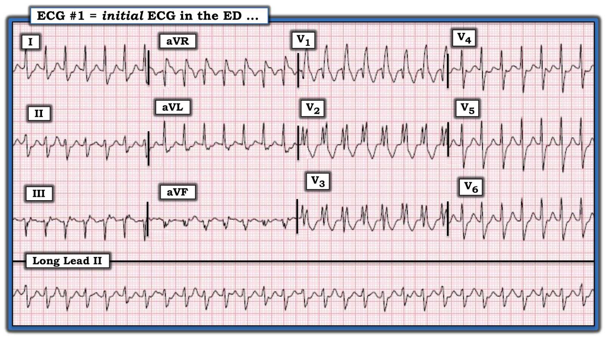
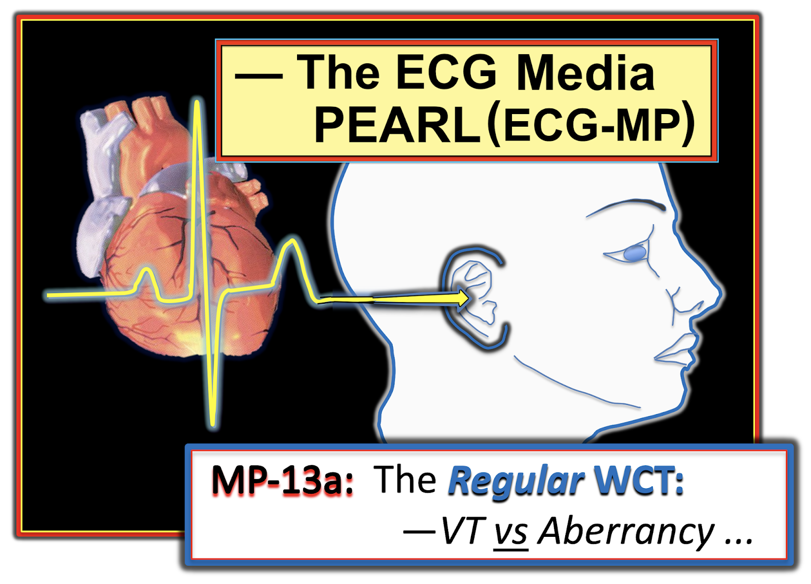
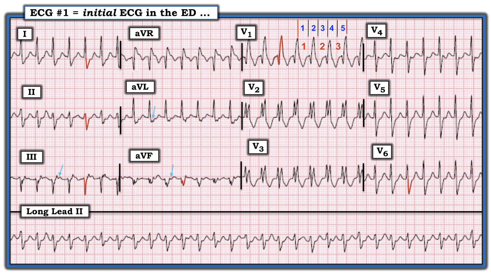
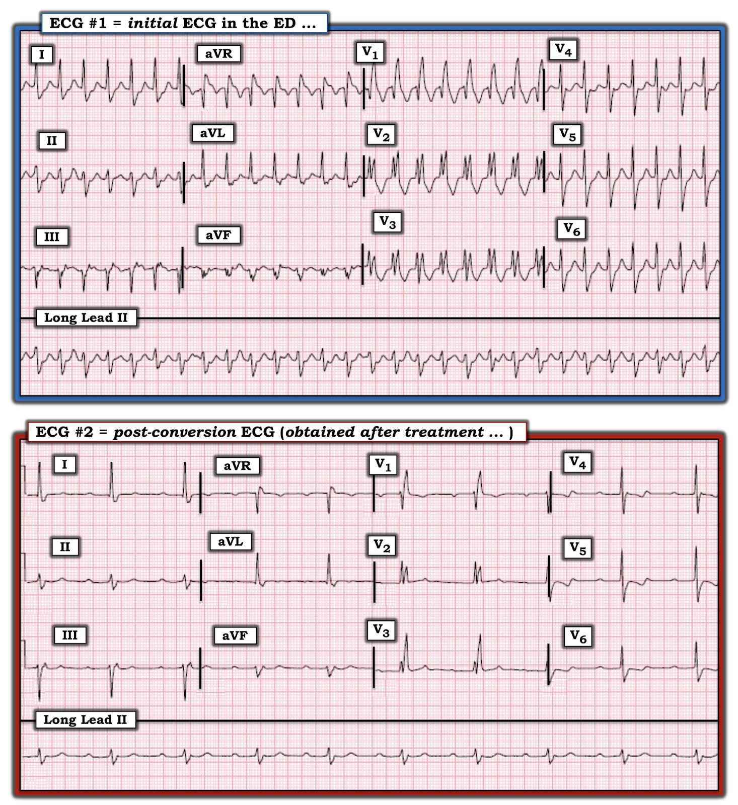
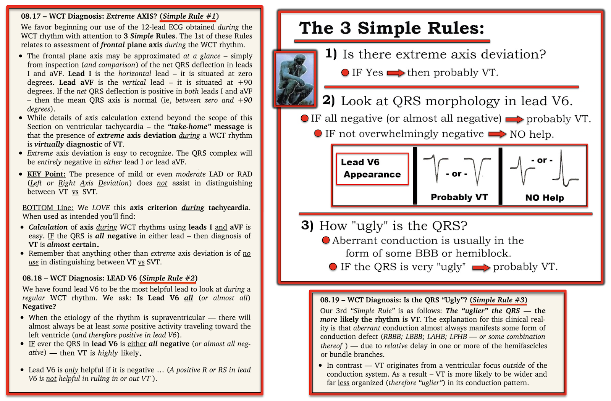
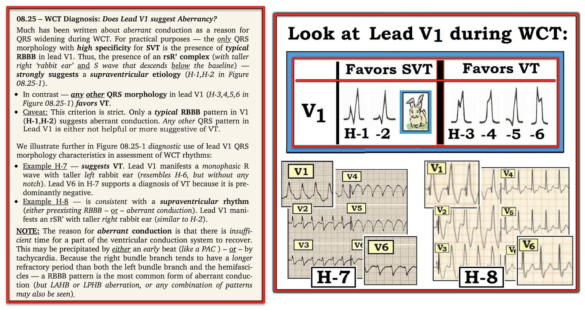

ECG Blog #263 — Nhịp nhanh QRS rộng (WCT) này là gì?
Bệnh nhân là một người đàn ông trung niên có tiền sử bệnh van tim — đến khoa Cấp cứu – ED (Emergency Department) với điện tâm đồ như trong Hình-1. Bệnh nhân ổn định huyết động (hemodynamically stable) vào thời điểm ghi bản ghi này.
- Bạn sẽ đọc bản ghi này NHƯ THẾ NÀO?
- Nhịp này có phải VT không? — BẠN sẽ làm gì?


=======================================
LƯU Ý #1: Đến đây, một số bạn đọc có thể muốn nghe ECG Audio PEARL dài 12:20 phút trước khi đọc Suy nghĩ của tôi về điện tâm đồ ở Hình-1. Bạn có thể xem phần Suy nghĩ của tôi về bản ghi này vào bất kỳ lúc nào (nằm bên dưới ECG MP-13a).
=======================================


ECG Media PEARL #13a (12:20 phút Audio) hôm nay — trình bày "quan điểm của tôi" về cách đánh giá nhịp nhanh QRS rộng đều – WCT (Wide-Complex Tachycardia) — kèm các mẹo để phân biệt giữa VT với SVT có BBB có sẵn từ trước hoặc có dẫn truyền lệch hướng (aberrant conduction).
Cách tiếp cận CỦA TÔI với nhịp ở Hình-1:
Chúng ta được biết bệnh nhân ổn định huyết động vào thời điểm ghi điện tâm đồ ở Hình-1. Do đó, theo định nghĩa — chúng ta có ít nhất một khoảnh khắc để đánh giá nhịp trước khi phải quyết định điều trị. Tôi ưa dùng Cách tiếp cận Ps, Qs & 3R (Đã ôn lại trong ECG Blog 185).
- Xét theo Ps, Qs & 3Rs: Nhịp trên bản ghi hôm nay đều (Regular) — với QRS rộng — tần số (Rate) ~180/phút.
- Không có sóng P xoang (Vì vậy, về thông số thứ 5 — không có sóng P xoang nào để "liên quan" (Related) với QRS). Dù vậy — có thể có hoạt động nhĩ ngược dòng (Xem bên dưới).
- Do đó — Đây là một WCT ( = Wide-Complex Tachycardia) đều tần số ~180/phút, không có dấu hiệu rõ ràng của sóng P xoang.
Những điểm CHÍNH trong Chẩn đoán Phân biệt:
- Sau khi đã nhìn nhanh bệnh nhân để chắc chắn rằng người bệnh ổn định huyết động (và không cần sốc điện chuyển nhịp đồng bộ ngay lập tức) — bạn sẽ mất KHÔNG quá ~10 giây để đi qua các câu trả lời mà tôi đưa ra cho 3 gạch đầu dòng ở trên, với kết luận rằng nhịp này là một WCT đều.
- Về mặt thống kê — khoảng 80-90% mọi nhịp WCT đều không có dấu hiệu rõ ràng của sóng P xoang rốt cuộc sẽ là VT (nhịp nhanh thất – Ventricular Tachycardia). Vì vậy — luôn phải giả định nhịp là VT cho đến khi chứng minh được điều ngược lại. Dù vậy — Vì bệnh nhân trong ca này có ổn định huyết động, việc xem xét nhịp kỹ hơn để tìm thêm manh mối giúp ích cho chẩn đoán phân biệt là hợp lý.
- NẾU vào bất kỳ lúc nào trong quá trình chẩn đoán mà tình trạng huyết động của bệnh nhân xấu đi — Hãy sẵn sàng sốc điện chuyển nhịp ngay lập tức! Hiển nhiên, để đánh giá điều này — "Bạn phải có mặt ở đó". Nhưng khi đọc ca này như nó được trình bày với tôi — tôi muốn xem xét kỹ hơn (Hãy nhớ xem Audio Pearl ở trên trong bài hôm nay để thấy chi tiết quy trình chẩn đoán mà tôi ưa dùng).
Hình dạng QRS:
- Dù đúng là phần lớn các nhịp WCT đều không có sóng P xoang rốt cuộc sẽ là VT — vẫn có 10-20% các nhịp như vậy không phải VT. Việc thấy hình dạng QRS điển hình của dẫn truyền trên thất làm tăng đáng kể khả năng nguyên nhân của nhịp nhanh QRS rộng là BBB (blốc nhánh – Bundle Branch Block) có sẵn từ trước hoặc dẫn truyền lệch hướng! (Xem ECG Blog #211 để bàn luận chi tiết về dẫn truyền lệch hướng dạng RBBB).
- Tôi đã khoanh ĐỎ một số đặc điểm CHÍNH của hình dạng QRS trong ca hôm nay (Hình-2). "Điều cốt lõi" (Xem Hình-5 trong PHẦN BỔ SUNG bên dưới!) — là hình dạng QRS của nhịp WCT đều ở Hình-2 gợi ý mạnh một căn nguyên trên thất với dẫn truyền kiểu RBBB (blốc nhánh phải – Right Bundle Branch Block) vì: i) Có phức bộ rSR' ở chuyển đạo V1 với sóng dương khởi đầu (sóng r) nhỏ-nhưng-có-mặt — và — sóng S ở chuyển đạo V1 đi xuống dưới đường nền — với sóng dương cuối là "tai thỏ" (rabbit ear) bên phải cao hơn; ii) Có sóng S tận cùng rộng ở các chuyển đạo bên I và V6, phù hợp với dẫn truyền kiểu RBBB; iii) Có sóng R khởi đầu mảnh (lên nhanh) và khá cao ở mỗi chuyển đạo bên (tức là các chuyển đạo I, aVL, V4,V5,V6) — trong khi VT thường biểu hiện sóng khởi đầu của QRS chậm hơn; và, iv) Ngoài hình dạng dẫn truyền RBBB điển hình — QRS chủ yếu âm ở mỗi chuyển đạo dưới là điển hình của dẫn truyền kiểu LAHB (blốc phân nhánh trái trước – Left Anterior HemiBlock).
- Điểm CHÍNH: Dù chắc chắn vẫn có thể nhịp WCT đều ở Hình-2 là do VT phân nhánh (fascicular VT)— các đặc điểm hình dạng nêu trên, vốn nghiêng về dẫn truyền trên thất, làm giảm đáng kể khả năng thống kê của VT từ 80-90% — xuống một con số thấp hơn nhiều. SUY NGHĨ CỦA TÔI: Dù tôi nghi ngờ rằng nhịp trong ca hôm nay không phải VT — tôi hoàn toàn thừa nhận rằng mình không chắc chắn.
ĐIỂM THEN CHỐT (PEARL) #1: Điều quan trọng là phải hiểu thực tế lâm sàng rằng bạn thường sẽ không biết chắc chắn căn nguyên của một nhịp nhanh QRS rộng vào thời điểm cần bắt đầu điều trị. Điều này không sao cả. Trong những trường hợp như vậy — Hãy bắt đầu điều trị dựa trên linh cảm tốt nhất của bạn về nhịp đó là gì.
- ĐIỂM THEN CHỐT (PEARL) #2: Thật khó để "phán xét lại" bất kỳ lựa chọn nào trong số nhiều phương án điều trị có thể được chọn cho ca hôm nay. Nói đơn giản — có nhiều hơn một thuốc có thể phù hợp để thử ban đầu. Dù vậy — NẾU chẩn đoán phân biệt chính của bạn là giữa VT phân nhánh với SVT có BBB có sẵn từ trước hoặc dẫn truyền lệch hướng — Hãy nhớ rằng Verapamil tĩnh mạch (và/hoặc Diltiazem tĩnh mạch) có nhiều khả năng hiệu quả trong kiểm soát cả hai khả năng chẩn đoán này (Xem ECG Blog #197 để bàn luận chi tiết về chủ đề này).


Ước tính nhanh tần số tim:
BẠN đã ước tính gần đến 180/phút tới mức nào khi ước tính tần số của nhịp WCT ở Hình-2? Lý do việc ước tính chính xác tần số tim quan trọng — là vì tần số tim thường gợi ý căn nguyên của các nhịp SVT khác nhau (Xem ECG Blog #240 để ôn lại khái niệm này).
- Hình-2 minh họa cách dùng phương pháp Cứ-Mỗi-Ba-Nhát (Every-Third-Beat Method) để ước tính nhanh tần số tim (phương pháp này được bàn đầy đủ trong ECG Blog #210). Mất khoảng 5 ô lớn (các số màu XANH ở chuyển đạo V1 của Hình-2) — để ghi được 3 nhát (các số màu ĐỎ). Do đó — 1/3 tần số là ~300 ÷ 5 = 60/phút X 3 ~180/phút. LƯU Ý: Khi đã luyện tập — bạn có thể ước tính chính xác tần số của nhịp nhanh trong chưa đến 5 giây!
Có hoạt động nhĩ trên Hình-2 không?
Sóng P xoang bình thường không thấy trên Hình-2 — vì chúng ta không thấy sóng P dương nào rõ ràng ở chuyển đạo II. Nhưng có gợi ý sóng P ngược dòng có thể có ở một số chuyển đạo (các mũi tên XANH nhạt ở các chuyển đạo III, aVL và aVF trên Hình-2). Việc các sóng đang bàn có vẻ âm ở 2 chuyển đạo dưới là phù hợp với dẫn truyền ngược dòng.
- Dù khả năng có dẫn truyền nhĩ ngược dòng thật thú vị — tôi không chắc đây là một dấu hiệu "thật". Đó là vì một số chuyển đạo khác thường cho thấy hoạt động nhĩ ngược dòng lại không biểu hiện sóng nào phù hợp với giả thuyết này (tức là tôi không thấy gì gợi ý sóng P ngược dòng ở các chuyển đạo II, aVR và V1).
- ĐIỂM THEN CHỐT (PEARL) #3: Ngay cả NẾU các mũi tên XANH nhạt trên Hình-2 đúng là dẫn truyền nhĩ ngược dòng — điều này cũng không giúp ích cho chẩn đoán phân biệt vì cả VT lẫn các nhịp SVT vào lại đều có thể biểu hiện dẫn truyền ngược dòng 1:1. Việc thấy hoạt động nhĩ trong một nhịp WCT nghiêng về VT chỉ khi có phân ly nhĩ thất (AV dissociation) (Xem ECG Blog #151).
TẠI SAO hình dạng QRS thay đổi ở chuyển đạo II dài?
BẠN có để ý sự thay đổi liên tục của hình dạng QRS ở dải nhịp chuyển đạo II dài trên Hình-2 không? Dù các chuyển đạo khác ít biến đổi hình dạng QRS hơn nhiều — không thể phủ nhận sự biến đổi hình dạng QRS từng nhát một mà chúng ta thấy ở dải nhịp chuyển đạo II dài! Có một số cách giải thích khả dĩ cho sự thay đổi này:
- Sự biến đổi hình dạng QRS có thể là kết quả của biến đổi theo hô hấp — thường gặp ở bệnh nhân bệnh cấp tính (nhất là khi họ nhịp nhanh và/hoặc khó thở).
- Khác biệt chính về hình dạng QRS mà chúng ta thấy ở dải nhịp chuyển đạo II dài liên quan đến độ sâu của sóng S. Có lẽ có dẫn truyền LAHB từng lúc?
- Sự thay đổi hình dạng QRS có thể phản ánh điện thế luân phiên (electrical alternans)! (Xem ECG Blog #83 để bàn luận đầy đủ về hiện tượng này). Ủng hộ giả thuyết này — là việc sóng T cũng biến đổi hình dạng suốt dải nhịp chuyển đạo II dài. Dù hầu hết các ca điện thế luân phiên mà tôi từng gặp biểu hiện biến đổi từng nhát theo tỉ lệ 2:1 — các tỉ lệ lặp lại khác vẫn có thể xảy ra (tức là 3:1, 4:1, v.v.) — và điều này có vẻ đúng với Hình-2.
- ĐIỀU CỐT LÕI: Nếu không theo dõi điện tâm đồ thêm (nhất là trong những khoảnh khắc trong và ngay sau khi chuyển về nhịp xoang) — rất khó chứng minh rằng sự biến đổi hình dạng QRS và sóng T thấy rõ ở chuyển đạo II dài của Hình-2 là điện thế luân phiên. Lý do việc nhận ra điện thế luân phiên có thể hữu ích trong chẩn đoán loạn nhịp nhanh — là vì dấu hiệu này nghiêng về vào lại nút AV là cơ chế (nhất là vào lại nút AV có liên quan đến một đường phụ). Dù vậy — một số tình trạng lâm sàng khác (không liên quan đến loạn nhịp) cũng đã được ghi nhận có liên quan với điện thế luân phiên — và — trong số các loạn nhịp, điện thế luân phiên đôi khi đã được thấy ở VT đơn dạng — vì vậy hiện tượng này không nhất thiết chẩn đoán căn nguyên SVT.
===================================
Diễn tiến của ca hôm nay:
Diễn biến lâm sàng của ca hôm nay khá khó khăn — bao gồm việc thử một số thuốc (tức là Adenosine, Amiodarone, Diltiazem, Propafenone). Cuối cùng — nhịp đã được kiểm soát. Một điện tâm đồ sau chuyển nhịp được trình bày ở Hình-3.
- CÂU HỎI: Có thể rút ra kết luận gì từ Hình-3 về căn nguyên của nhịp WCT đều trên bản ghi ban đầu tại ED?


TRẢ LỜI & BÀN LUẬN:
Bản ghi sau chuyển nhịp ở Hình-3 cho thấy nhịp chậm xoang với khoảng PR kéo dài (~0.34 giây), nhiều khả năng là hậu quả của thuốc chống loạn nhịp cần dùng để kiểm soát nhịp nhanh.
- Mức độ kéo dài khoảng PR đáng kể này sẽ cần được theo dõi cẩn thận khi đưa ra quyết định về thuốc chống loạn nhịp dài hạn.
- Hình dạng QRS khi nhịp xoang (tức là ở điện tâm đồ #2) giống hệt hình dạng QRS trong cơn nhịp nhanh QRS rộng (ở điện tâm đồ #1). Cụ thể — có rSR' (với sóng S đi xuống dưới đường nền — và sóng cuối "tai thỏ" bên phải cao hơn) ở chuyển đạo V1 — với sóng S tận cùng rộng ở các chuyển đạo bên I và V6 — và — phức bộ QRS chủ yếu âm ở mỗi chuyển đạo dưới. Hình dạng QRS này hoàn toàn phù hợp với dẫn truyền kiểu RBBB/LAHB. Việc hình dạng QRS trong cơn WCT và sau khi chuyển về nhịp xoang giống hệt nhau chứng minh rằng căn nguyên của nhịp WCT đều trong ca hôm nay là trên thất!
- LƯU Ý #1: Lý do QRS rộng trên bản ghi ban đầu tại ED là BBB (tức là RBBB/LAHB) có sẵn từ trước — chứ không phải "dẫn truyền lệch hướng". Dẫn truyền lệch hướng là hiện tượng liên quan tần số, chỉ nên được viện dẫn làm nguyên nhân gây QRS rộng nếu QRS trở nên hẹp khi nhịp nhanh hết.
- LƯU Ý #2: Trên bản ghi sau chuyển nhịp ở Hình-3 — Chúng ta không còn thấy các sóng xuất hiện ngay sau QRS trên Hình-2 (được đánh dấu bằng mũi tên XANH nhạt trên hình đó). Điều này gợi ý rằng các sóng đó đúng là dẫn truyền nhĩ ngược dòng trong cơn nhịp nhanh — trong ca này, là kết quả của một nhịp SVT vào lại (AVNRT hoặc AVRT xuôi chiều).
- LƯU Ý #3: Sự biến đổi hình dạng QRS từng nhát một thấy ở dải nhịp chuyển đạo II dài trong cơn nhịp nhanh không còn thấy trên bản ghi sau chuyển nhịp. NẾU sự biến đổi hình dạng QRS từng nhát này hết ngay sau khi chuyển về nhịp xoang — điều đó sẽ xác nhận nghi ngờ của tôi rằng đây là điện thế luân phiên — trong ca hôm nay, là kết quả của SVT vào lại.
==================================
LỜI CẢM ƠN: Xin cảm ơn 林柏志 (Đài Loan) đã chia sẻ ca bệnh và bản ghi này.
==================================
=======================
Các bài ECG Blog liên quan đến ca hôm nay:
- ECG Blog #185 — Ôn lại Hệ thống đọc nhịp của tôi, dùng Cách tiếp cận Ps, Qs & 3R.
- ECG Blog #211 — TẠI SAO xảy ra dẫn truyền lệch hướng? (Và vì sao dạng dẫn truyền lệch hướng thường gặp nhất biểu hiện hình dạng RBBB — kèm một ECG Video về chủ đề này trong bài).
- ECG Blog #210 — Ôn lại phương pháp Cách-Một-Nhát (hoặc Cứ-Mỗi-Ba-Nhát) để ước tính tần số tim nhanh — và bàn về một ca khác có nhịp WCT đều.
- ECG Blog #196 — Ôn lại một ca khác có nhịp WCT đều.
- ECG Blog #197 — Ôn lại khái niệm VT vô căn, trong đó VT phân nhánh là một trong 2 loại thường gặp nhất.
- ECG Blog #204 — Ôn lại chẩn đoán điện tâm đồ các blốc nhánh (RBBB/LBBB/IVCD).
- ECG Blog #203 — Ôn lại chẩn đoán điện tâm đồ về trục và các blốc phân nhánh. Để ôn lại hình dạng QRS trong các blốc hai phân nhánh (RBBB/LAHB; RBBB/LPHB) — Xem video ECG Video Pearl #21 trong bài blog này.
- ECG Blog #220 — Ôn lại Danh sách của tôi về các nguyên nhân của nhịp WCT đều (kèm Audio Pearl về đánh giá tình trạng ổn định huyết động).
- ECG Blog #240 — Ôn lại ca một nhịp SVT (nhịp nhanh trên thất – SupraVentricular Tachycardia) đều — nhấn mạnh cách tần số của nhịp có thể giúp chẩn đoán SVT.
- ECG Blog #151 — Ôn lại một ca nhịp nhanh QRS rộng trong đó việc nhận ra phân ly nhĩ thất đã giúp chẩn đoán VT!
- ECG Blog #83 — Ôn lại cách nhận biết trên điện tâm đồ và ý nghĩa lâm sàng của điện thế luân phiên.

PHẦN BỔ SUNG (ngày 21 tháng 11 năm 2021):
Dưới đây tôi trình bày lại từ ECG Blog #196 — 2 hình hữu ích để đánh giá nhịp WCT đều:



